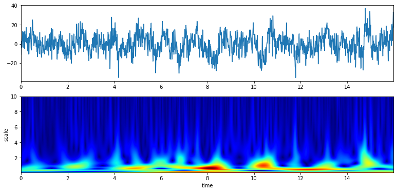

Import
Contents
Scalogram using Continues Wavelet Transform
Import¶
import numpy as np
import matplotlib.pyplot as plt
import spkit as sp
print('spkit-version ', sp.__version__)
spkit-version 0.0.9.4
#from sp.cwt import ScalogramCWT
#from sp.cwt import compare_cwt_example
Data¶
x,fs = sp.load_data.eegSample_1ch()
t = np.arange(len(x))/fs
print('shape ',x.shape, t.shape)
plt.figure(figsize=(15,3))
plt.plot(t,x)
plt.xlim([0,t[-1]])
plt.xlabel('time')
plt.ylabel('amplitude')
plt.show()
shape (2048,) (2048,)
Predefined example script¶
sp.cwt.compare_cwt_example(x,t,fs=fs)
Gauss wavelet¶
Default parameter setting¶
XW,S = sp.cwt.ScalogramCWT(x,t,fs=fs,wType='Gauss',PlotPSD=True)

XW.shape, S.shape
((100, 2048), (100,))
plt.figure(figsize=(15,3))
plt.imshow(np.abs(XW),aspect='auto',origin='lower',cmap='jet',interpolation='sinc')
plt.show()
plt.figure(figsize=(15,3))
plt.imshow(np.log10(np.abs(XW)+0.2),aspect='auto',origin='lower',cmap='jet',interpolation='sinc')
plt.show()
with custom setting¶
f0 = np.linspace(0.1,10,100)
Q = np.linspace(0.1,5,100)
XW,S = sp.cwt.ScalogramCWT(x,t,fs=fs,wType='Gauss',PlotPSD=True,f0=f0,Q=Q)

Show wavelets in time and frequency domain¶
f0 = np.linspace(0.1,10,100)
Q = np.linspace(0.1,5,100)
XW,S = sp.cwt.ScalogramCWT(x,t,fs=fs,wType='Gauss',PlotPSD=True,PlotW=True,f0=f0,Q=Q)
Other wavelets¶
print('Morlet wavelet')
XW,S = sp.cwt.ScalogramCWT(x,t,fs=fs,wType='Morlet',PlotPSD=True,)
print('Gabor wavelet')
XW,S = sp.cwt.ScalogramCWT(x,t,fs=fs,wType='Gabor',PlotPSD=True,)
print('Poisson wavelet')
XW,S = sp.cwt.ScalogramCWT(x,t,fs=fs,wType='Poisson',PlotPSD=True,)
print('Complex Maxican wavelet')
XW,S = sp.cwt.ScalogramCWT(x,t,fs=fs,wType='cMaxican',PlotPSD=True,)
print('Complex Shannon wavelet')
XW,S = sp.cwt.ScalogramCWT(x,t,fs=fs,wType='cShannon',PlotPSD=True,)
Morlet wavelet
Gabor wavelet
Poisson wavelet
Complex Maxican wavelet
Complex Shannon wavelet
Documentation¶
help(sp.cwt.ScalogramCWT)
Help on function ScalogramCWT in module cwt:
ScalogramCWT(x, t, wType='Gauss', fs=128, PlotPSD=False, PlotW=False, fftMeth=True, interpolation='sinc', **Parameters)
Compute scalogram using Continues Wavelet Transform for wavelet type (wType) and given scale range
Parameters
----------
x: array-like, input signal,
t: array-like, time array corresponding to x, same length as x
fs: sampling rate
PlotPSD: bool, if True, plot Scalogram
PlotW : bool, if True, plot wavelets in time and frequecy with different scalling version
fftMeth: if True, FFT method is used, else convolution method is used. FFT method is faster.
interpolation: str, or None, interpolation while ploting Scalogram.
Parameters for different wavelet functions
--------
Common Parameters for all the Wavelet functions
f : array of frequency range to be analysed, e.g. np.linspace(-10,10,2*N-1), where N = len(x)
: if None, frequency range of signal is considered from -fs/2 to fs/2
: ( fs/n1*(np.arange(n1)-n1/2))
A list of wavelets will be generated for each value of scale (e.g. f0, sigma, n etc)
1. Gauss: (wType =='Gauss')
f0 = array of center frquencies for wavelets, default: np.linspace(0.1,10,100) [scale value]
Q = float or array of q-factor for each wavelet, e.g. 0.5 (default) or np.linspace(0.1,5,100)
: if array, should be of same size as f0
t0 = float=0, time shift of wavelet, or phase shift in frquency, Not suggeestive to change
2. For Morlet: (wType =='Morlet')
sig = array of sigma values for morlet wavelet, default: np.linspace(0.1,10,100) [scale value]
fw = array of frequency range, e.g. np.linspace(-10,10,2*N-1), where N = len(x)
ref: https://en.wikipedia.org/wiki/Morlet_wavelet
3. For Gabor: (wType =='Gabor')
Gauss and Gabor wavelet are essentially same
f0 = array of center frquencies for wavelets, default: np.linspace(1,40,100) [scale value]
a = float, oscillation parameter, default 0.5,
could be an array (not suggeestive), similar to Gauss, e.g np.linspace(0.1,1,100) or np.logspace(0.001,0.5,100)
t0 = float=0, time shift of wavelet, or phase shift in frquency. Not suggeestive to change
4. For Poisson: (wType=='Poisson')
n = array of intergers, default np.arange(100), [scale value]
method = 1,2,3, different implementation of Poisson funtion, default 3
keep the method=3, other methods are under development and not exactly compatibile with framework yet,
ref: https://en.wikipedia.org/wiki/Poisson_wavelet
5. For Complex MaxicanHat: (wType=='cMaxican')
f0 = array of center frquencies for wavelets, default: np.linspace(1,40,100) [scale value]
a = float, oscillation parameter, default 1.0, could be an array (not suggeestive)
ref: https://en.wikipedia.org/wiki/Complex_Mexican_hat_wavelet
6. For Complex Shannon: (wType=='cShannon')
f0 = array of center frquencies for wavelets, default: 0.1*np.arange(10) [scale value],
fw = BandWidth each wavelet, default 0.5, could be an array (not suggeestive)
ref: https://en.wikipedia.org/wiki/Shannon_wavelet
Returns
-------
XW: Complex-valued matrix of time-scale - Scalogram, with shape (len(S), len(x)). scale vs time
S : scale values
Examples
--------
import numpy as np
import matplotlib.pyplot as plt
from spkit.cwt import ScalogramCWT
# Example 1 - EEG Signal
import spkit as sp
from spkit.cwt import compare_cwt_example
x,fs = sp.load_data.eegSample_1ch()
t = np.arange(len(x))/fs
print(x.shape, t.shape)
compare_cwt_example(x,t,fs=fs)
# Example 2.1 - different wavelets
XW,S = ScalogramCWT(x,t,fs=fs,wType='Gauss',PlotPSD=True)
# Example 2.2 - set scale values and number of points
nS = 100
f0 = np.linspace(0.1,10,nS) # range of scale values - frquency
Q = np.linspace(0.1,5,nS) # different q-factor for each scale value
# Q = 0.5
XW,S = ScalogramCWT(x,t,fs=fs,wType='Gauss',PlotPSD=True,f0=f0,Q=Q)
# Example 2.3 - plot scalled wavelets too
XW,S = ScalogramCWT(x,t,fs=fs,wType='Gauss',PlotPSD=True,PlotW=True,f0=f0,Q=Q)
# Example 3
t = np.linspace(-5, 5, 10*100)
x = (np.sin(2*np.pi*0.75*t*(1-t) + 2.1) + 0.1*np.sin(2*np.pi*1.25*t + 1) + 0.18*np.cos(2*np.pi*3.85*t))
xn = x + np.random.randn(len(t)) * 0.5
XW,S = ScalogramCWT(xn,t,fs=100,wType='Gauss',PlotPSD=True)
# Example 4
f0 = np.linspace(0.1,30,100)
Q = np.linspace(0.1,5,100) # or = 0.5
XW,S = ScalogramCWT(xn,t,fs=128,wType='Gauss',PlotPSD=True,f0=f0,Q=Q)